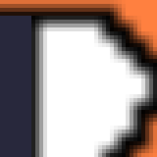

DxLib Direct3D 11 シェーダー仕様書(DxLib 3.24f)
DxLib の公式リファレンスは、Direct3D 11 モードで自作シェーダー(オリジナルシェーダー)に渡される定数を「非公開」としています。 この文書は、DxLib 3.24f のソースパッケージと実際の描画での確認をもとに、それを Direct3D 9 版のリファレンスと同じ細かさで書き起こしたものです。
- 対象: DxLib 3.24f、Direct3D 11 モード(DxLib の既定)。バージョンが変わったら検証をやり直す。
- 根拠の書き方:
ファイル:行… DxLib ソースパッケージ(05_VSCodeExtention/00_DxLib_Make/DxLibMake/)の中の場所。- 検証 …
verify/の検証プログラムで、実際に DxLib が GPU に渡した値を読み戻して確かめた項目(項目名はverify/build/results.txtと同じ)。 - 推測 … ソースを読んだうえでの推論。確かめていない。
- 検証のやり直し方:
python verify/run.py(全 61 項目。2026-09-27 に全項目 OK)。
目次
- 1. はじめに: なぜ 2D と 3D でピクセルシェーダーの入力の並びが違うのか
- 2. 早見表(これだけは守る)
- 3. 描画関数ごとに使われる頂点シェーダーと、ピクセルシェーダーの入力
- 4. シェーダーの作り方
- 5. 頂点シェーダーの入力
- 6. 定数バッファの一覧
- 7. 行列の読み方
- 8. DxLib がセットする定数
- 8.1 頂点 b0 / ピクセル b0: 共通(DX_D3D11_CONST_BUFFER_COMMON)
- 8.2 頂点 b1: 基本(DX_D3D11_VS_CONST_BUFFER_BASE)
- 8.3 頂点 b2: その他の行列(DX_D3D11_VS_CONST_BUFFER_OTHERMATRIX)
- 8.4 頂点 b3: スキンメッシュのボーン行列(DX_D3D11_VS_CONST_BUFFER_LOCALWORLDMATRIX)
- 8.5 ピクセル b1: 基本(DX_D3D11_PS_CONST_BUFFER_BASE)
- 8.6 ピクセル b2: シャドウマップ(DX_D3D11_PS_CONST_BUFFER_SHADOWMAP)
- 9. 自分の値を渡す: 自作の定数バッファ
- 10. テクスチャとサンプラー
- 11. 描画先
- 12. Direct3D 9 版から移植するときの対応表
- 13. 未確認の事項
1. はじめに: なぜ 2D と 3D でピクセルシェーダーの入力の並びが違うのか
Direct3D 11 モードで自作のピクセルシェーダーを書くと、最初に次のことでつまずきます。
DrawPrimitive2DToShader(2D)のピクセルシェーダーは、入力をSV_POSITION, COLOR0, COLOR1, TEXCOORD0, TEXCOORD1の順に書かないと正しく動かない。DrawPolygon3DToShader(3D、頂点シェーダーを指定しないとき)は、SV_POSITION, COLOR0, TEXCOORD0, TEXCOORD1の順(COLOR1が無い)。- 並びを間違えてもエラーは出ず、色やテクスチャ座標がずれるか、何も描かれないだけ。
こうなっている経緯は次のとおりです。
- Direct3D 9 版の 2D 描画は、頂点シェーダーを使っていなかった。 頂点(
VERTEX2DSHADERのposとrhw)は変換済みの座標としてそのまま Direct3D 9 に渡されていた(Windows/DxGraphicsD3D9.cpp:25080-25097)。 - Direct3D 11 には「頂点シェーダー無しの描画」が無い。 そこで DxLib は、Direct3D 9 の動きを真似る内蔵の頂点シェーダー
VS_Shader2Dを 2D 描画に必ず使う。自作の頂点シェーダーを設定していても、2D の描画ではこの内蔵シェーダーで上書きされる(Windows/DxGraphicsD3D11.cpp:14229-14240)。検証 2D ToShader ignores user vertex shader - Direct3D 9 は頂点シェーダーが無いとき、頂点のスペキュラー色をピクセルシェーダーに自動で渡していた。
VS_Shader2Dもそれに合わせてCOLOR1を出力する(Shader/Windows/Direct3D11/Base/Base_2D_VS.hlsl:95-102)。 - 3D で頂点シェーダーを指定しないときに使われる
VS3D_Normalは、座標変換だけの簡易版で、COLOR1を出力しない(Shader/Windows/Direct3D11/Base/Base_3D_Simple_VS.hlsl:37-43)。推測: 作者が 2D ほど互換性を重視しなかったため。 - Direct3D 9 のピクセルシェーダーの入力は、名前(セマンティクス)で結び付いていたので、並びは関係なかった。 Direct3D 10 以降は、頂点シェーダーの出力とピクセルシェーダーの入力が並び(レジスタの位置)で結び付く(Direct3D の一般的な仕様)。
- DxLib は Direct3D 9 時代の使い方(「ピクセルシェーダーだけ自作する」)のまま Direct3D 11 に対応したので、「内蔵の頂点シェーダーの出力と同じ順番で入力を書く」という、どこにも書かれていない決まりが生まれた。
2D と 3D で並びが違うのはこのためです。DxLib の仕様として受け入れ、この文書の 3 章の表どおりに書いてください。
PS_INPUT を 2D と 3D の両方に使うと、どちらかで 3 番目以降がずれます。2. 早見表(これだけは守る)
| # | 決まり | 根拠 |
|---|---|---|
| 1 | コンパイルは vs_4_0 / ps_4_0。SDK の Tool/ShaderCompiler/ShaderCompiler.exe で /Tvs_4_0 /Tps_4_0。ソースは CP932 で渡す |
4 章 |
| 2 | 2D(DrawPrimitive2DToShader など)で使えるのはピクセルシェーダーだけ。頂点シェーダーは常に内蔵の VS_Shader2D |
検証 2D ToShader ignores user vertex shader |
| 3 | ピクセルシェーダーの入力は、使われる頂点シェーダーの出力と同じ順番で書く(3 章の表) | 1 章 |
| 4 | 自作の頂点シェーダーの入力は、DxLib の内蔵シェーダーと同じ要素・同じ順番・同じ型で全部書く(5 章)。1 つでも違うと何も描かれない(エラーも出ない) | 5.1 |
| 5 | MV1 のモデルを自作シェーダーで描くときは、頂点シェーダーとピクセルシェーダーの両方を設定する | 3.3 |
| 6 | 行列は DxLib の MATRIX を転置して入っている。dot(float4(座標, 1), 行) で掛ける |
7 章 |
| 7 | ライトの位置と方向はビュー空間。有効なライトだけが「ディレクショナル → スポット → ポイント」の順に詰めて入る | 検証 Light.order |
| 8 | Light[i].Type が 0 以外でも、そのライトが有効とは限らない。有効なライトの数が要るなら自分の定数バッファで渡す |
検証 Light.Type of unused slots |
| 9 | 自作シェーダーの描画では FactorColor(不透明度)は更新されない。D3D9 版サンプルのように FactorColor.a を掛けると、透明になって何も見えないことがある |
検証 PS.b1.FactorColor not updated |
| 10 | Fog.Mode は描画の順番で変わってしまう。フォグの種類はシェーダーを作り分けるか、自分の定数バッファで渡す |
検証 Fog.Mode unreliable |
| 11 | SetVSConstF / SetPSConstF などは Direct3D 11 では何もしない。自分の値は CreateShaderConstantBuffer で作った定数バッファを b4 以降に置いて渡す |
9 章 |
| 12 | SetUseTextureToShader のステージ番号は 0 から詰めて使う(間を空けない) |
10.1 |
3. 描画関数ごとに使われる頂点シェーダーと、ピクセルシェーダーの入力
準備処理は Graphics_D3D11_DrawPreparationToShader(Windows/DxGraphicsD3D11.cpp:23425-23514)。自作の頂点シェーダーが設定されていなければ内蔵のものを入れる(:23493-23500)。
SetUseVertexShader(-1) などで「設定なし」にできる(DxGraphics.cpp:23061-23073)。
3.1 2D: DrawPrimitive2DToShader / DrawPolygon2DToShader / それぞれの Indexed 版
- 頂点シェーダー: 自作のものを設定していてもいなくても、内蔵の
VS_Shader2D(Base_2D_VS.hlslのエントリVS_Shader2D)。- 描画の直前に上書きされる。
Graphics_D3D11_CommonBuffer_DrawPrimitiveを第 5 引数UseDefaultVertexShader省略(既定 TRUE)で呼んでいるため(Windows/DxGraphicsD3D11.cpp:23531-23536、既定値Windows/DxGraphicsD3D11.h:1536-1537、上書きWindows/DxGraphicsD3D11.cpp:14229-14240、Indexed 版:14337-14348)。 DrawPolygon2DToShaderはDrawPrimitive2DToShaderを TRIANGLELIST で呼ぶだけ(DxGraphics.cpp:23617-23638)。
- 描画の直前に上書きされる。
VS_Shader2Dの処理(Base_2D_VS.hlsl:105-129):w = 1/rhwとして xyz に w を掛け、ProjectionMatrix(2D 用。8.1)を掛ける。色・テクスチャ座標はそのまま渡す。rhwは通常 1.0f にする(0 だと座標が無限大になる)。- ピクセルシェーダーの入力(この順で書く):
HLSL(シェーダー)struct PS_INPUT
{
float4 Position : SV_POSITION; // 画面上の座標(ピクセルの中心は +0.5)
float4 Diffuse : COLOR0; // VERTEX2DSHADER の dif
float4 Specular : COLOR1; // VERTEX2DSHADER の spc
float2 TexCoords0 : TEXCOORD0; // VERTEX2DSHADER の u, v
float2 TexCoords1 : TEXCOORD1; // VERTEX2DSHADER の su, sv
};
- 2D の描画では、ライトとフォグの定数は更新されない(準備のフラグが 0。
Windows/DxGraphicsD3D11.cpp:23528)。2D のピクセルシェーダーでライトやフォグの定数を読んでも、最後に 3D を描いたときの値が残っているだけ。
3.2 3D: DrawPrimitive3DToShader / DrawPolygon3DToShader / Indexed 版 / 頂点バッファ版
- 自作の頂点シェーダーを設定した場合: それがそのまま使われる(
UseDefaultVertexShader = FALSEで呼ぶ。Windows/DxGraphicsD3D11.cpp:23561-23567, 23650-23659, 23684-23693)。ピクセルシェーダーの入力は、自作の頂点シェーダーの出力に合わせる。 - 設定しない場合: 内蔵の
VS3D_Normal(Base_3D_Simple_VS.hlsl、USE_VERTEX3DSHADER=1でコンパイルしたもの。Windows/DxGraphicsD3D11.cpp:2380-2391)。- 処理(
Base_3D_Simple_VS.hlsl:56-95): ローカル → ワールド → ビュー → 射影の変換だけ。ライティングはしない。頂点のdifをそのまま出す。両方のテクスチャ座標にTextureMatrix[0]を掛ける。
- 処理(
- ピクセルシェーダーの入力(頂点シェーダーを設定しないとき。この順で書く):
HLSL(シェーダー)struct PS_INPUT
{
float4 Position : SV_POSITION;
float4 Diffuse : COLOR0; // VERTEX3DSHADER の dif(ライティングなし)
float2 TexCoords0 : TEXCOORD0; // VERTEX3DSHADER の u, v(TextureMatrix[0] で変換済み)
float2 TexCoords1 : TEXCOORD1; // VERTEX3DSHADER の su, sv(同上)
}; // COLOR1(スペキュラー)は無い
- 3D の描画では、描画の直前にライト・フォグ・行列が定数バッファに反映される(
Windows/DxGraphicsD3D11.cpp:23554-23558, 23643-23647)。 - 2D と 3D の入力の並びが違うことは、拡張機能の自動検証(
05_VSCodeExtention/extension/test/shader-runtime/)で描画して確かめてある。
3.3 MV1 のモデル: MV1SetUseOrigShader(TRUE) のときの MV1DrawModel など
- 自作の頂点シェーダーを設定した場合: それが使われる(
Windows/DxModelD3D11.cpp:2918-2924)。入力の並びは 5.3 の MV1 の形式。 - 設定しない場合: DxLib は頂点シェーダーを何も設定しない(
Windows/DxModelD3D11.cpp:2911-2944。ハンドルが 0 以下なら何もしない分岐しか無い)。推測: 直前の描画(たとえばDrawGraph)の頂点シェーダーが残り、入力の形式が合わないので描かれないか、おかしな絵になる。ピクセルシェーダーも同じ作り(:2936-2942)。 - したがって MV1 では頂点シェーダーとピクセルシェーダーの両方を自作して設定する。ピクセルシェーダーの入力は自作の頂点シェーダーの出力に合わせる。
- プリミティブは三角形リストで固定(
Windows/DxModelD3D11.cpp:3609)。 - 頂点が 9 個以上のボーンの影響を受けるメッシュ(
DX_MV1_VERTEX_TYPE_FREE_FRAME)は、CPU で変形してワールド座標にした頂点を、剛体メッシュの形式で渡す。このときLocalWorldMatrixは単位行列(Windows/DxModelD3D11.cpp:2488-2492, 3833-3840)。 SetUseLarge3DPositionSupport(TRUE)にすると、行列の意味が変わる(ワールド行列にビュー行列が掛け込まれ、ビュー行列が単位行列になる。Windows/DxModelD3D11.cpp:3072-3086, 3155-3169)。この文書は Large3D を使わない前提。
3.4 2D の絵に自作の頂点シェーダーを使う方法(正射影カメラ + 3D の板)
2D の描画では自作の頂点シェーダーが使えない(3.1)。頂点を動かしたい 2D の絵(旗・スライムの揺れなど)は、カメラを「正射影・画面の画素と 3D の座標が 1 対 1」にして、3D の板として DrawPolygon3DToShader で描けば、2D と同じ見た目のまま自作の頂点シェーダーが使える(Unity の 2D と同じ考え方)。実装は samples/D1_Sprite2DVertexShader(src/Camera2D.h の SetupCamera2D と MakeSpriteGrid)。
- カメラ:
SetupCamera_Ortho( 画面の高さ )、SetCameraNearFar( 1, 1000 )、SetCameraPositionAndTargetAndUpVec( ( 幅/2, 高さ/2, 500 ), ( 幅/2, 高さ/2, 0 ), ( 0, -1, 0 ) )。- +z 側から −z の向きを見て、上方向を −y にする。 x は右・y は下で、
DrawGraphと同じ向きになる。推測(計算による。描画で確かめたのは +z 側から見る形だけ): −z 側から +z の向きを見ると、左右が反対になる(DxLib のビュー行列は左手系で、右の向き = 上方向 × 見る向き)。 SetDrawScreenはカメラの設定を元に戻すので、SetDrawScreenの後に毎回設定する。
- +z 側から −z の向きを見て、上方向を −y にする。 x は右・y は下で、
- 板の頂点の座標は画面の画素の座標(z = 0)。頂点シェーダーで形を変えるなら、板をマス目に分けて頂点を増やす(4 隅だけでは曲げられない)。
- 確かめたこと(
verify/の ortho2d。DrawGraph/DrawExtendGraphで描いた絵と画素単位で比べた):- 補間なしで、等倍も 4 倍も完全に一致した(位置・向き・ドット絵のにじみ無し)。検証 ortho2d/same as DrawGraph (1x, nearest)、ortho2d/same as DrawExtendGraph (4x, nearest)
- 補間あり(
DX_DRAWMODE_BILINEAR)の 4 倍も完全に一致した(透過色の無い画像)。検証 ortho2d/same as DrawExtendGraph (4x, bilinear, no transparent color) SetDrawBlendMode( DX_BLENDMODE_ALPHA, … )の合成の方法は効く(アルファ付きの画像の半透明が一致)。不透明度(2 番目の引数)はシェーダーに届かないので、頂点の色のアルファで渡すとSetDrawBlendMode( DX_BLENDMODE_ALPHA, 128 )と一致した。検証 ortho2d/alpha blend…、ortho2d/opacity by vertex alpha…- この描画の後も、ふつうの
DrawGraphはそのまま使える。検証 ortho2d/DrawGraph after ortho drawing is unchanged
- 透過色:
DrawGraph( x, y, 画像, TRUE )と同じく透過色(既定は黒)の画素を描かないようにするには、ピクセルシェーダーでclip( 色.a - 0.5f / 255.0f )とする。LoadGraphで読み込んだ画像の透過色の画素はアルファが 0 になっている。これが無いと、合成の方法が NOBLEND(既定)のとき、透過色の画素が黒く描かれた。 - 知っておくこと: 透過色のある画像を補間ありで拡大すると、縁が
DrawExtendGraphと違う(自作のシェーダーでは透過色の画素の黒が補間に混ざり、縁に黒い線が出る)。検証 ortho2d/KNOWN: transparent-color edges differ… ドット絵は補間なしで描くか、透過色ではなくアルファ付きの画像(PNG など)を使う。
 正射影カメラ + 3D の板 + 自作シェーダー
正射影カメラ + 3D の板 + 自作シェーダーverify/ の ortho2d。python spec/make_images.py で検証の画像から切り出し)。
自作シェーダー(補間あり)4. シェーダーの作り方
- プロファイル:
vs_4_0/ps_4_0。DxLib が自分のシェーダーを実行時にコンパイルするときもvs_4_0/ps_4_0を使う(Windows/DxGraphicsD3D11.cpp:2256, 2285)。- 既定のデバイスは機能レベル 11_1 / 11_0 だけを要求して作られる(
Windows/DxGraphicsAPIWin.cpp:2325-2356)。SetUseDirect3D11MinFeatureLevelを使ったときだけ 10_x / 9_x も候補に入る。 - 推測: 既定の機能レベル 11 なら
vs_5_0/ps_5_0も動くが、DxLib に合わせて 4.0 を使う。DxLib にはコンピュートシェーダーなど 5.0 でしか使えない機能の公開 API が無い。
- 既定のデバイスは機能レベル 11_1 / 11_0 だけを要求して作られる(
- コンパイラ: SDK の
Tool/ShaderCompiler/ShaderCompiler.exe。オプションは/T<プロファイル>/Fo<出力>/E<エントリ>/D<名前>=<値>。- CP932 のソースしか読めない。UTF-8 で書いたソースは CP932 に変換してから渡す(CP932 に無い文字があると失敗する)。
- Git Bash から呼ぶときは
MSYS2_ARG_CONV_EXCL='*'を付ける(/Tps_4_0がパスに変換されてしまう)。
- 読み込み:
LoadVertexShader("xxx.vso")/LoadPixelShader("xxx.pso")。Direct3D 9 用にコンパイルしたもの(vs_2_0など)は読めない。 - Direct3D のバージョンの確認:
GetUseDirect3DVersion() == DX_DIRECT3D_11(値は 3)。検証 direct3d11 - DxLib の定数バッファの宣言は、ソースパッケージの
Shader/Windows/Direct3D11/VertexShader.h/PixelShader.h(と、それが読むWindows/DxShader_*_D3D11.h、Shader/Windows/Direct3D11/DataType.h)をそのまま#includeするのがいちばん安全。C++ と同じ構造体なので、並びとパディングが必ず一致する。
5. 頂点シェーダーの入力
入力の形式(入力レイアウト)は、自作の頂点シェーダーからではなく、DxLib の内蔵の頂点シェーダーから作られる。
- 標準の描画用:
Windows/DxGraphicsD3D11.cpp:13861(内蔵のBaseSimple_VSのバイナリでCreateInputLayout)。 - MV1 用:
Windows/DxGraphicsD3D11.cpp:14051, 14073(内蔵のMV1_VertexLighting_VSのバイナリで作る)。 - 自作の頂点シェーダーを読み込むときは、頂点シェーダーを作るだけで入力レイアウトは作らない(
Windows/DxGraphicsD3D11.cpp:28919)。形式が合っているかの確認もしない(:11808-11826)。
推測: Direct3D 11 は描画のときに、頂点シェーダーの入力と入力レイアウトの対応を確かめ、合わなければその描画を捨てる。そのため内蔵の頂点シェーダーと同じ要素・同じ順番・同じ型で入力を書かないと、エラーも出ずに何も描かれない(実際に、要素を省くと何も描かれないことを確かめてある)。
5.1 VERTEX3DSHADER(3D の ToShader 描画)
入力レイアウト: Windows/DxGraphicsD3D11.cpp:559-575。構造体: DxLib.h:1399-1410。1 頂点 88 バイト。
HLSL(シェーダー)struct VS_INPUT
{
float3 Position : POSITION0; // pos
float4 SubPosition : POSITION1; // spos
float3 Normal : NORMAL0; // norm
float3 Tangent : TANGENT0; // tan
float3 Binormal : BINORMAL0; // binorm
float4 Diffuse : COLOR0; // dif(0〜1 の float4 で届く)
float4 Specular : COLOR1; // spc
float2 TexCoords0 : TEXCOORD0; // u, v
float2 TexCoords1 : TEXCOORD1; // su, sv
};
- 使わない要素も省かずに書く。
Positionは float3(Direct3D 9 版のヘルプの例は float4)。- 色は機能レベル 10 以上では BGRA の形式で渡されるので、
COLOR_U8の r, g, b, a がそのまま届く(Windows/DxGraphicsD3D11.cpp:13848-13856、:7283, 7305, 7337)。推測: 機能レベル 9.x の PC では赤と青が入れ替わる。
5.2 VERTEX2DSHADER(2D の ToShader 描画)
2D では自作の頂点シェーダーは使われない(3.1)。参考として内蔵の VS_Shader2D への入力を書いておく(Windows/DxGraphicsD3D11.cpp:577-589、構造体 DxLib.h:1360-1368。1 頂点 40 バイト)。
| 順 | セマンティクス | 型 | 中身 |
|---|---|---|---|
| 0 | POSITION0 | float4 | pos.x, pos.y, pos.z, rhw |
| 1 | COLOR0 | float4 | dif |
| 2 | COLOR1 | float4 | spc |
| 3 | TEXCOORD0 | float2 | u, v |
| 4 | TEXCOORD1 | float2 | su, sv |
5.3 MV1 のモデル
頂点の種類は MV1GetTriangleListVertexType で分かる(DxLib.h:392-400。法線マップ付きは +4。DxModel.cpp:30130-30144)。
入力レイアウト: Windows/DxGraphicsD3D11.cpp:13988-14046。並びは内蔵の MV1Default_VertexLighting_VS.hlsl:4-32 と同じ。
HLSL(シェーダー)struct VS_INPUT
{
float3 Position : POSITION; // ローカル座標
float3 Normal : NORMAL0;
float4 Diffuse : COLOR0;
float4 Specular : COLOR1;
float4 TexCoords0 : TEXCOORD0; // (u, v, 1, 1)。float4 なので注意
float4 TexCoords1 : TEXCOORD1; // (u, v, 1, 1)。UV が 1 組しかなければ TexCoords0 と同じ
#ifdef BUMPMAP // 法線マップ付き(種類 4〜7)
float3 Tangent : TANGENT0;
float3 Binormal : BINORMAL0;
#endif
#ifdef SKINMESH // 4 ボーン(種類 1, 5)・8 ボーン(種類 2, 6)
int4 BlendIndices0 : BLENDINDICES0; // ボーン番号 × 3(b3 の Matrix の添え字)
float4 BlendWeight0 : BLENDWEIGHT0;
#ifdef BONE8 // 8 ボーン(種類 2, 6)
int4 BlendIndices1 : BLENDINDICES1;
float4 BlendWeight1 : BLENDWEIGHT1;
#endif
#endif
};
| 種類(値) | 追加の要素 | 1 頂点のバイト数 |
|---|---|---|
DX_MV1_VERTEX_TYPE_1FRAME(0) |
なし | 64 |
DX_MV1_VERTEX_TYPE_4FRAME(1) |
BLENDINDICES0, BLENDWEIGHT0 | 84 |
DX_MV1_VERTEX_TYPE_8FRAME(2) |
+ BLENDINDICES1, BLENDWEIGHT1 | 104 |
DX_MV1_VERTEX_TYPE_FREE_FRAME(3) |
なし(剛体として渡す。3.3) | 64 |
DX_MV1_VERTEX_TYPE_NMAP_1FRAME(4) |
TANGENT0, BINORMAL0 | 88 |
DX_MV1_VERTEX_TYPE_NMAP_4FRAME(5) |
TANGENT0, BINORMAL0, BLENDINDICES0, BLENDWEIGHT0 | 108 |
DX_MV1_VERTEX_TYPE_NMAP_8FRAME(6) |
+ BLENDINDICES1, BLENDWEIGHT1 | 128 |
DX_MV1_VERTEX_TYPE_NMAP_FREE_FRAME(7) |
TANGENT0, BINORMAL0(剛体として渡す) | 88 |
- Direct3D 9 版のヘルプの並び(BLENDINDICES が NORMAL より前など)とは違う。 Direct3D 9 版のサンプルの入力構造体は、そのままでは使えない。
BLENDINDICESは符号なし 8 ビット整数の形式(R8G8B8A8_UINT)で、中身はボーン番号 × 3(Windows/DxModelD3D11.cpp:301-304, 318-321)。b3 のMatrix[idx + 0〜2]をそのまま引ける。- 頂点の色は CPU 側で並べ替えてあるので、正しい r, g, b, a で届く(
Windows/DxModelD3D11.cpp:239-249)。 - 複数のモデルをまとめて描く機能(
UsePackDraw)を使うと、剛体メッシュでも 4 ボーンの形式になる(Windows/DxModelD3D11.cpp:426, 3645-3648)。
6. 定数バッファの一覧
DxLib は初期化のときに次のスロットに定数バッファを置き、描画のたびに置き直すことはしない(Windows/DxGraphicsD3D11.cpp:8947-8956)。値の書き込み(UpdateSubresource)は描画の直前にまとめて行う(:12812-12862)。
| シェーダー | スロット | 中身 | 大きさ(float4 の数) | 宣言 |
|---|---|---|---|---|
| 頂点 | b0 | 共通(ライト 6 個・マテリアル・フォグ) | 54 | DX_D3D11_CONST_BUFFER_COMMON |
| 頂点 | b1 | 基本(射影・ビュー・ワールド行列など) | 16 | DX_D3D11_VS_CONST_BUFFER_BASE |
| 頂点 | b2 | その他の行列(シャドウマップ・テクスチャ座標) | 18 | DX_D3D11_VS_CONST_BUFFER_OTHERMATRIX |
| 頂点 | b3 | スキンメッシュのボーン行列 | 162 | DX_D3D11_VS_CONST_BUFFER_LOCALWORLDMATRIX |
| ピクセル | b0 | 共通(頂点の b0 と同じバッファ) | 54 | DX_D3D11_CONST_BUFFER_COMMON |
| ピクセル | b1 | 基本(不透明度・アルファテストなど) | 5 | DX_D3D11_PS_CONST_BUFFER_BASE |
| ピクセル | b2 | シャドウマップ | 6 | DX_D3D11_PS_CONST_BUFFER_SHADOWMAP |
| ピクセル | b3 | フィルター用(GraphFilter などが使う。HLSL 側の宣言は無い) |
— | — |
| 両方 | b4〜b13 | 空き。自作の定数バッファはここに置く | — | 9 章 |
- 定義のヘッダー:
Windows/DxShader_Common_D3D11.h、Windows/DxShader_VS_D3D11.h、Windows/DxShader_PS_D3D11.h。HLSL 側:Shader/Windows/Direct3D11/VertexShader.h:19-40、PixelShader.h:41-53。 - スロット番号の定義:
Windows/DxGraphicsD3D11.h:123-131。 - 頂点とピクセルの b0 が同じバッファであること:
Windows/DxGraphicsD3D11.cpp:8948, 8953。検証 PS.b0=VS.b0 (same buffer) - 以下の表の「位置」は、そのバッファの先頭から何番目の float4 か(
[n].xは n 番目の float4 の x 成分)。
7. 行列の読み方
- DxLib の
MATRIXは「行ベクトル × 行列」の決まりで、平行移動はm[3][0..2]に入る。 - 定数バッファの i 番目の float4 には、
MATRIXの i 列目(m[0][i], m[1][i], m[2][i], m[3][i])が入る。つまり転置して入っている(Windows/DxGraphicsD3D11.cpp:9218-9390)。検証 VS.b1.ViewMatrix / ProjectionMatrix / LocalWorldMatrix - 掛け方: 結果の k 成分 =
dot(float4(座標, 1), 行列[k])。
HLSL(シェーダー)float4 worldPos = float4(dot(float4(pos, 1), g_Base.LocalWorldMatrix[0]),
dot(float4(pos, 1), g_Base.LocalWorldMatrix[1]),
dot(float4(pos, 1), g_Base.LocalWorldMatrix[2]), 1);
float4 viewPos = float4(dot(worldPos, g_Base.ViewMatrix[0]),
dot(worldPos, g_Base.ViewMatrix[1]),
dot(worldPos, g_Base.ViewMatrix[2]), 1);
float4 projPos = float4(dot(viewPos, g_Base.ProjectionMatrix[0]),
dot(viewPos, g_Base.ProjectionMatrix[1]),
dot(viewPos, g_Base.ProjectionMatrix[2]),
dot(viewPos, g_Base.ProjectionMatrix[3]));
ViewMatrixとLocalWorldMatrixは 3 行だけ(4 列目の (0,0,0,1) を捨てた形)。w は自分で 1 にする。- 向き(法線など)は平行移動を含めないように
dot(dir, 行列[k].xyz)で変換する。 - MV1 の内部の行列(
MATRIX_4X4CT)は最初から転置した形なので、そのまま 3 行コピーされる(DxModel.h:200、Windows/DxModelD3D11.cpp:3042-3197)。 - 自分の定数バッファに
MATRIXをそのまま書き込む場合は、HLSL 側をrow_major float4x4で宣言するか、C++ 側で転置してから書く(一般知識: HLSL の既定は column_major)。
8. DxLib がセットする定数
8.1 頂点 b0 / ピクセル b0: 共通(DX_D3D11_CONST_BUFFER_COMMON)
ライト Light[0〜5](1 個あたり float4 × 7)
ライト i の先頭は [7i]。書き込み: Graphics_D3D11_DeviceState_SetLightState(Windows/DxGraphicsD3D11.cpp:9434-9517)。
| 位置 | フィールド | 中身 | 根拠 |
|---|---|---|---|
[7i].x |
int Type |
DX_LIGHTTYPE_POINT=1、SPOT=2、DIRECTIONAL=3(DxLib.h:652-657) |
:9474 |
[7i+1].xyz |
Position |
位置(ビュー空間) | :9476-9479。検証 Light.Spot / Light.Point Position=view space |
[7i+1].w |
RangePow2 |
有効距離の 2 乗 | :9480。検証 Light.Spot / Light.Point RangePow2 |
[7i+2].xyz |
Direction |
向き(ビュー空間)。下の注意を参照 | :9475, 9481-9483。検証 Light.Direction=view space |
[7i+2].w |
FallOff |
スポットライトのフォールオフ(既定 1) | :9484 |
[7i+3].xyz |
Diffuse |
ディフューズ色 | :9485-9491。検証 Light.Diffuse,Specular |
[7i+3].w |
SpotParam0 |
cos(外側の角度 / 2)(角度は CreateSpotLightHandle の OutAngle。円錐の全体の角度) |
:9471-9472, 9488。検証 Light.Spot SpotParam0 |
[7i+4].xyz |
Specular |
スペキュラー色 | :9485-9491 |
[7i+4].w |
SpotParam1 |
1 / (cos(内側の角度 / 2) − cos(外側の角度 / 2))。差が 1e-7 未満なら 100000 |
:9492-9499。検証 Light.Spot SpotParam1 |
[7i+5] |
Ambient |
ライトのアンビエント色 × マテリアルのアンビエント色(有効なライトだけ) | :9393-9431。検証 Light.Ambient |
[7i+6].xyz |
Attenuation0/1/2 |
距離による減衰の係数 0, 1, 2 | :9504-9506。検証 Light.Point Attenuation |
並び方(DxGraphics.cpp:36138-36215)
- 有効なライトだけを、ディレクショナル → スポット → ポイントの順に
Light[0]から詰める。同じ種類の中ではハンドルの順。作った順ではない。検証 Light.order=enabled only, directional->spot->point - 標準ライト(
SetLightDirectionなどで操作するもの)もディレクショナルライトの 1 つとして並ぶ。 - 7 個目以降は捨てられる(
Windows/DxGraphicsD3D11.cpp:9451-9454)。種類の順に並ぶので、捨てられるのは主にポイントライト。
有効・無効の情報は無い
- ライトを無効にしたり削除したりしても、そのスロットの
Typeは書き換えられず、前の値が残る(Typeを書くのは:9474だけ)。検証 Light.Type of unused slots keeps old value - ライティングの有効・無効(
SetUseLighting)も定数には入らない(:11185-11206)。DxLib の標準シェーダーは、C++ 側でライトの数と種類に合わせたシェーダーを選んでいる。 - 有効なライトの数や種類が要るなら、自分の定数バッファで渡す。
向きの注意
SetLightDirection・SetLightDirectionHandle・CreateDirLightHandleは向きを正規化して保存する(DxGraphics.cpp:25505-25509, 25761-25765)。CreateSpotLightHandleは正規化しない(DxGraphics.cpp:25531)。長さ 1 でない向きを渡すと、そのまま長さ 1 でない値が入る。検証 Light.Spot Position,Direction=view space (direction NOT normalized by CreateSpotLightHandle)- シェーダー側で
normalizeしておくのが安全。
既定値(DxGraphics.cpp:36092-36110, 34238-34244)
- 標準ライトはディレクショナル、向き (1, −1, 1)。ディフューズ 1、スペキュラー 1、アンビエント 0.33。
- 有効距離 2000、減衰係数 0 = 0.1、外側・内側の角度 2.0(=
SpotParam0がcos(1)、SpotParam1が 100000)。検証 Light.defaults - ビュー行列が変わると、全スロットの位置と向きがビュー空間で計算し直される(
Windows/DxGraphicsD3D11.cpp:9267-9284)。
マテリアル Material([42]〜[45])
書き込み: Graphics_D3D11_DeviceState_SetMaterial(Windows/DxGraphicsD3D11.cpp:9572-9620)。
| 位置 | フィールド | 中身 | 根拠 |
|---|---|---|---|
[42] |
Diffuse |
ディフューズ色 | :9596-9603。検証 Material.Diffuse,Specular,Power |
[43] |
Specular |
スペキュラー色 | 同上 |
[44] |
Ambient_Emissive |
エミッシブ色 + マテリアルのアンビエント色 × グローバルアンビエント色(rgba ごと) | :9423-9426。検証 Material.Ambient_Emissive |
[45].x |
Power |
スペキュラーの強さ(1e-11 未満は 1e-11 にされる) | :9604 |
[45].yzw |
TypeParam0/1/2 |
マテリアルの種類ごとのパラメーター | :9605-9607 |
- ToShader の描画では
SetMaterialParamの値。既定はディフューズ 0.8、スペキュラー 0.8、アンビエント 0、エミッシブ 0、強さ 20(DxGraphics.cpp:34284-34288)。アンビエントの既定が 0 なので、何も設定しないとライトのアンビエントもAmbient_Emissiveも 0 になる。 - MV1 の描画ではメッシュのマテリアル(
Windows/DxModelD3D11.cpp:1784-1830)。 - グローバルアンビエントは
SetGlobalAmbientLight(DxGraphics.cpp:25236-25248)。初期値 0。
フォグ Fog([46]〜[49])と高さフォグ VerticalFog([50]〜[53])
書き込み: Graphics_D3D11_DeviceState_UpdateConstantFogParam(Windows/DxGraphicsD3D11.cpp:10876-10900)。
| 位置 | フィールド | 中身 | 根拠 |
|---|---|---|---|
[46].x |
int Mode |
フォグの種類(DX_FOGMODE_NONE=0、EXP=1、EXP2=2、LINEAR=3)。信用しない(下) |
:10888 |
[47].x |
LinearAdd |
end / (end − start) | :10889。検証 Fog.Mode,LinearAdd,LinearDiv |
[47].y |
LinearDiv |
−1 / (end − start) | :10890 |
[47].z |
Density |
密度(SetFogDensity) |
:10891 |
[47].w |
DensityStart |
0 | :10892 |
[48].x |
E |
2.71828183(自然対数の底) | :10893 |
[49] |
Color |
SetFogColor の値 / 255、a = 1 |
:10858-10861。検証 Fog.Color |
- 線形フォグの濃さ:
ビュー空間の z * LinearDiv + LinearAdd(DxLib の標準シェーダーShader/Windows/Direct3D11/Base/Base_3D_PixelLighting_VS.hlsl:219)。指数フォグ:1 / pow(E, z * Density)(同:226)。 Modeは描画の順番で変わってしまう。 定数に書かれるのはSetFogStartEndとSetFogDensityを呼んだときだけで、そのときModeには「その時点で内部のフォグが有効なら種類、無効なら NONE」が入る(:10888, 10934, 10962)。内部のフォグは 2D の描画のたびに無効にされる(:14793-14807)ので、2D を描いた後にSetFogDensityを呼ぶと、フォグを有効にしていても NONE が入る。検証 Fog.Mode unreliable (EXP set, but NONE after a 2D draw)- 高さフォグ(
VerticalFog)のModeはSetVerticalFogEnable/SetVerticalFogModeでも更新される(:11000, 11027)。start > end のときはLinearAdd = −end/(start−end)、LinearDiv = 1/(start−end)(:11085-11094)。ワールド座標の Y で濃さを決める(Base_3D_PixelLighting_VS.hlsl:244-275)。
8.2 頂点 b1: 基本(DX_D3D11_VS_CONST_BUFFER_BASE)
| 位置 | フィールド | 中身 | 根拠 |
|---|---|---|---|
[0]〜[3] |
AntiViewportMatrix[4] |
Direct3D のビューポート行列の逆行列(画面の画素座標 → 射影空間)。描画先を変えるたびに更新 | DxGraphics.cpp:18161-18184、Windows/DxGraphicsD3D11.cpp:25289 |
[4]〜[7] |
ProjectionMatrix[4] |
3D: 射影行列(GetCameraProjectionMatrix の転置)。2D: 画素座標 → 射影空間の行列 |
下。検証 VS.b1.ProjectionMatrix |
[8]〜[10] |
ViewMatrix[3] |
ビュー行列(GetCameraViewMatrix の転置、3 行) |
Windows/DxGraphicsD3D11.cpp:9253-9312。検証 VS.b1.ViewMatrix |
[11]〜[13] |
LocalWorldMatrix[3] |
ローカル → ワールド行列(転置、3 行) | :9218-9250。検証 VS.b1.LocalWorldMatrix |
[14] |
ToonOutLineSize |
トゥーンの輪郭線の太さ(4 成分とも同じ)。MV1 のトゥーンの輪郭線を描くときだけ設定される | :11580-11583、Windows/DxModelD3D11.cpp:2019。検証 VS.b1.ToonOutLineSize=0 |
[15].x |
DiffuseSource |
1: 頂点のディフューズ色を使う、0: マテリアルの色を使う(SetMaterialUseVertDifColor。既定 1) |
:9679。検証 VS.b1.DiffuseSource |
[15].y |
SpecularSource |
同上、スペキュラー色(SetMaterialUseVertSpcColor。既定 1) |
:9714 |
[15].z |
MulSpecularColor |
スペキュラーを使うなら 1、使わないなら 0(ToShader では SetUseSpecular、MV1 ではマテリアル) |
:9646、Windows/DxModelD3D11.cpp:1896-1900。検証 VS.b1.DiffuseSource=0..., MulSpecularColor=0 |
ProjectionMatrix(3D)は「射影行列 × DxLib のビューポート行列 × Direct3D のビューポート行列の逆行列」(Windows/DxGraphicsD3D11.cpp:24369-24373)。SetCameraScreenCenterを既定のまま使っていればGetCameraProjectionMatrixの転置と一致する(検証 はこの条件で確認)。ProjectionMatrix(2D)は「SetTransformTo2Dの行列(既定は単位行列)× Direct3D のビューポート行列の逆行列」(:24363-24365)。AntiViewportMatrixは同梱のどの HLSL も使っていない。射影行列に同じ変換が掛け込まれているので、自作シェーダーで掛ける必要は無い。LocalWorldMatrixの中身は描画の種類で変わる。
| 描画 | LocalWorldMatrix |
根拠 |
|---|---|---|
| ToShader(3D) | SetTransformToWorld の行列(既定は単位行列。SetDrawScreen でも単位行列に戻る) |
Windows/DxGraphicsD3D11.cpp:23556-23558、DxGraphics.cpp:34612-34613 |
| MV1 剛体メッシュ | フレームのローカル → ワールド行列 | Windows/DxModelD3D11.cpp:3684, 3101-3116 |
| MV1 スキンメッシュ(4・8 ボーン) | 設定されない(前の値が残る)。モデルの位置と回転はボーン行列(b3)に入る | Windows/DxModelD3D11.cpp:3811。検証 VS.b3.Matrix |
| MV1 9 ボーン以上 | 単位行列 | Windows/DxModelD3D11.cpp:3835 |
8.3 頂点 b2: その他の行列(DX_D3D11_VS_CONST_BUFFER_OTHERMATRIX)
| 位置 | フィールド | 中身 | 根拠 |
|---|---|---|---|
[4m]〜[4m+3] |
ShadowMapLightViewProjectionMatrix[m][4] |
シャドウマップ m(0〜2)のライトのビュー × 射影行列(転置)。ワールド座標に掛ける | Windows/DxGraphicsD3D11.cpp:28713-28768。検証 VS.b2.ShadowMapLightViewProjectionMatrix=0 |
[12], [13] |
TextureMatrix[0][0〜1] |
テクスチャ座標の変換行列の 0 列目と 1 列目。変換しないときは単位行列 | :10721-10750, 10780。検証 VS.b2.TextureMatrix[0] |
[14]〜[17] |
TextureMatrix[1〜2][0〜1] |
使われない(0 のまま) | 検証 VS.b2.TextureMatrix[0]=identity rows, [1],[2]=0 |
- テクスチャ座標の変換:
u' = dot(float4(u, v, 1, 1), TextureMatrix[0][0])、v' = dot(float4(u, v, 1, 1), TextureMatrix[0][1])(Base_3D_Simple_VS.hlsl:80-84)。行列はSetTextureAddressTransform/SetTextureAddressTransformMatrixで設定する。 - シャドウマップを一度も使っていなければ、
ShadowMapLightViewProjectionMatrixはすべて 0。ソースでは未使用のスロットに (0,0,0,−1) を入れる処理がある(:28717-28723)が、シャドウマップの設定を一度もしていない状態では 0 だった。
8.4 頂点 b3: スキンメッシュのボーン行列(DX_D3D11_VS_CONST_BUFFER_LOCALWORLDMATRIX)
| 位置 | フィールド | 中身 | 根拠 |
|---|---|---|---|
[3j]〜[3j+2] |
Matrix[j*3+0〜2] |
このトライアングルリストで使うボーン j の行列(転置、3 行)。モデルのワールド変換を含む | Windows/DxModelD3D11.cpp:3172-3190。検証 VS.b3.Matrix[bone*3+0..2] |
- 1 つのトライアングルリストで使えるボーンは 54 個まで(
DX_D3D11_VS_CONST_WORLD_MAT_NUM)。 - 頂点の
BLENDINDICESはボーン番号 × 3 なので、Matrix[BlendIndices0.x + 0〜2]と引く。4 本の重み付き和を取ってから座標に掛ける(MV1Default_VertexLighting_VS.hlsl:129-164)。 - ToShader の描画では使われない(前の MV1 の描画の値が残る)。
8.5 ピクセル b1: 基本(DX_D3D11_PS_CONST_BUFFER_BASE)
| 位置 | フィールド | 中身 | 根拠 |
|---|---|---|---|
[0] |
FactorColor |
MV1 の描画: (1, 1, 1, 不透明度 × ブレンドの値 / 255)。ToShader の描画では更新されない | Windows/DxModelD3D11.cpp:1844-1850。検証 PS.b1.FactorColor=(1,1,1,opacity) set by MV1 draw |
[1].x |
MulAlphaColor |
色にアルファを掛けるか(0 / 1)。MV1 の描画でだけ設定される | Windows/DxGraphicsD3D11.cpp:11472-11494 |
[1].y |
AlphaTestRef |
アルファテストの比較値 / 255。既定 −1/255 | :11460, 23436-23447。検証 PS.b1.AlphaTestCmpMode,AlphaTestRef |
[2].x |
int AlphaTestCmpMode |
比較方法(DX_CMP_*、1〜8)。既定 DX_CMP_GREATER(5) |
:11425。検証 PS.b1 defaults |
[2].y |
int NoLightAngleAttenuation |
SetUseLightAngleAttenuation(FALSE) なら 1 |
:13271。検証 PS.b1.UseHalfLambert,NoLightAngleAttenuation |
[2].z |
int UseHalfLambert |
SetUseHalfLambertLighting(TRUE) なら 1 |
:13308 |
[3] |
IgnoreTextureColor |
テクスチャの色を無視する描画用。ToShader では更新されない | :12964-12978, 14848-14851 |
[4] |
DrawAddColor |
SetDrawAddColor の値 / 255、a = 0 |
:24256-24276。検証 PS.b1.DrawAddColor |
FactorColor の注意(Direct3D 9 版のサンプルを移植するときにいちばん引っかかる所)
- ToShader の描画は、ブレンド関係の設定を飛ばす準備処理を使う(
DX_D3D11_DRAWPREP_NOBLENDSETTING。Windows/DxGraphicsD3D11.cpp:23433, 14810-14895)。そのためFactorColor・IgnoreTextureColor・MulAlphaColorは、最後に DxLib が自分のシェーダーで設定した値のままになる。 - 起動してから一度も設定されていなければ
FactorColorは (0, 0, 0, 0)(定数バッファはゼロで初期化される。:13564)。 - MV1 のモデルを自作シェーダーで描くときも、ピクセルシェーダーの出力のアルファはそのまま合成に使われる。 深度などを描画先に書くときにアルファを 0 にすると、何も書き込まれない(B4 の原本。Direct3D 9 でも同じで、深度値の画像が真っ黒のままになった。アルファを 1 にすると公式ページの画像どおりになった)。推測: モデルの描画の合成の方法(アルファブレンド)に従うため。描画先に値を書くシェーダーでは、アルファを 1 にしておく。
SetDrawBlendMode(DX_BLENDMODE_ALPHA, 128)の 128 はFactorColorに入らない。検証 PS.b1.FactorColor not updated by SetDrawBlendMode (ToShader)- MV1 の描画は
FactorColorを設定し、その値は後の ToShader の描画にも残る。検証 PS.b1.FactorColor=(1,1,1,opacity) set by MV1 draw, stays for later ToShader draws(標準のシェーダーでの描画で確認)。設定はメッシュを描くたびに通るMV1_D3D11_SetupMeshDrawMaterialCommonの中にあり(Windows/DxModelD3D11.cpp:1773, 1844-1850、呼び出し:3612)、自作シェーダーでも同じ処理を通る。 - Direct3D 9 版のサンプルのピクセルシェーダーは
cfFactorColor(c5).aを出力のアルファに掛けている。ToShader の描画にそのまま移植すると、アルファが 0 になって何も見えないことがある。ToShader では、不透明度は頂点のdif.aか自分の定数バッファで渡す。 MV1 の描画ではFactorColorをそのまま使ってよい。
8.6 ピクセル b2: シャドウマップ(DX_D3D11_PS_CONST_BUFFER_SHADOWMAP)
シャドウマップ i(0〜2)ごとに float4 × 2。書き込み: Windows/DxGraphicsD3D11.cpp:28772-28832。
| 位置 | フィールド | 中身 |
|---|---|---|
[2i].x |
AdjustDepth |
深度の比較の補正値(未使用なら 1) |
[2i].y |
GradationParam |
影の境目のぼかしの範囲(未使用なら 0) |
[2i].z |
Enable_Light0 |
ライト 0 に影を適用しないなら 1、適用するなら 0 |
[2i].w |
Enable_Light1 |
同上、ライト 1 |
[2i+1].x |
Enable_Light2 |
同上、ライト 2 |
Enable_LightNは名前と意味が逆。 1 で「適用しない」(既定で 1 を入れ、適用するライトだけ 0 にする。:28792, 28815)。標準シェーダーはmax(影の濃さ, Enable_LightN)で使う(MV1Default_PixelLighting_PS.hlsl:426)。検証 PS.b2 unused: AdjustDepth=1, Gradation=0, Enable_LightN=1- ライト 0〜2 は、8.1 の並び方で詰めた後の先頭 3 つ(
:28788)。
9. 自分の値を渡す: 自作の定数バッファ
SetVSConstF / SetPSConstF / SetVSConstFMtx / SetVSConstFArray などは Direct3D 11 では何もしない(中身が空の関数。Windows/DxGraphicsD3D11.cpp:29081-29092)。代わりに次の関数を使う(宣言 DxLib.h:3362-3367。公式リファレンスには載っていない)。
| 関数 | 働き | 根拠 |
|---|---|---|
int CreateShaderConstantBuffer(int BufferSize) |
定数バッファを作る。大きさは 16 の倍数(でないと −1)。中身は 0 で初期化 | Windows/DxGraphicsD3D11.cpp:13548-13571。検証 CreateShaderConstantBuffer(size not multiple of 16) fails |
void* GetBufferShaderConstantBuffer(int h) |
書き込み用のメモリ(CPU 側)のアドレスを得る | :29186-29189 |
int UpdateShaderConstantBuffer(int h) |
書き込んだ内容を GPU に送る(その場で送る) | :29192-29199 |
int SetShaderConstantBuffer(int h, int TargetShader, int Slot) |
シェーダーのスロットに置く。TargetShader は DX_SHADERTYPE_VERTEX(0)/ PIXEL(1)/ GEOMETRY(2) |
:29202-29216 |
int DeleteShaderConstantBuffer(int h) |
削除する | :13622-13679 |
使い方(検証 user constant buffer at b4 (VS and PS)):
C++const int cb = CreateShaderConstantBuffer(sizeof(float) * 4); // 16 バイトの倍数
float* p = (float*)GetBufferShaderConstantBuffer(cb);
p[0] = time; p[1] = 0; p[2] = 0; p[3] = 0;
UpdateShaderConstantBuffer(cb);
SetShaderConstantBuffer(cb, DX_SHADERTYPE_PIXEL, 4); // b4 以降
// …… SetUsePixelShader → 描画 ……
DeleteShaderConstantBuffer(cb); // 終了時
HLSL(シェーダー)cbuffer MyParam : register(b4)
{
float g_Time;
float3 g_Padding;
};
- スロットは b4〜b13 を使う。 b0〜b3 は DxLib が使っている。同じスロットに置くと、DxLib は置き直さないので、その後の
DrawGraphなども壊れる(推測:RefreshDxLibDirect3DSetting()を呼ぶまで戻らない)。 - スロットの範囲外(14 以上)を指定してもエラーは返らない(
:13705-13708, 29227-29228)。 - DxLib は b4 以降を触らないので、一度置けば残る。ただし描画の直前に毎回置くのが確実。
- 値の並びは HLSL の定数バッファの詰め方(float4 の境界をまたがない)に従う。C++ 側の構造体は 16 バイト単位で揃える。
10. テクスチャとサンプラー
10.1 ToShader の描画(2D・3D)
SetUseTextureToShader(ステージ, 画像)のステージ(0〜15)がそのままtの番号になる(DxGraphics.cpp:23031-23058、Windows/DxGraphicsD3D11.cpp:23487-23490)。- サンプラーも同じ番号の
s。
HLSL(シェーダー)Texture2D g_Texture0 : register(t0);
SamplerState g_Sampler0 : register(s0);
float4 color = g_Texture0.Sample(g_Sampler0, input.TexCoords0);
- ステージは 0 から詰めて使う。 0 と 2 だけ設定して 1 を空けると、1 番に初期化されていない値が渡る(テクスチャの配列を初期化せずに「最後に設定した番号 + 1」個までまとめて渡しているため。
Windows/DxGraphicsD3D11.cpp:23429, 23464-23490)。推測: 落ちることがある。 - 1 枚も設定しないと、テクスチャは更新されず、前の描画のものが残る(
:23487)。 - サンプラーの既定は「ポイント(補間なし)・範囲外はクランプ」(
:8433-8445、DxGraphics.cpp:34140-34149)。- 補間は
SetDrawModeで全ステージまとめて変わる(DX_DRAWMODE_BILINEARで線形補間)。ステージごとには変えられない(Windows/DxGraphicsD3D11.cpp:14898-14901)。 - 範囲外の扱いは
SetTextureAddressModeUV(U, V, ステージ)でステージごとに変えられる(:14948-14971)。
- 補間は
- 自作の頂点シェーダーを設定しているときは、頂点シェーダーにも同じテクスチャが渡る(
:12274-12277)。サンプラーは渡らないので、頂点シェーダーではLoadを使う(推測)。 - シャドウマップのハンドルも渡せる(深度のテクスチャになる。
:23474-23477)。 - テクスチャの大きさは 2 の累乗でなくてよい(
:7277。Direct3D 9 版のヘルプの「2 の n 乗」の制限は無い)。
10.2 MV1 の描画(MV1SetUseOrigShader(TRUE))
DxLib がモデルのテクスチャを次の番号に置く(Windows/DxModelD3D11.cpp:2216-2412)。
| 番号(t / s) | 中身 |
|---|---|
| 0 | ディフューズ(無ければ白の画像) |
| 1 | 法線マップ(ある場合) |
| 2 | スペキュラーマップ(無ければ代わりの画像) |
| 3 | トゥーンのディフューズのグラデーション(トゥーンのとき) |
| 4 | トゥーンのスペキュラーのグラデーション(トゥーンのとき) |
| 5 | スフィアマップ(トゥーンで、ある場合) |
| 6 | RGB → VMaxRGB のボリュームテクスチャ(トゥーンのとき) |
| 7 | 2 枚目のディフューズ(マルチテクスチャのとき) |
| 8〜10 | シャドウマップ 0〜2(使っていなければ空) |
- 公式ヘルプ(
MV1SetUseOrigShader)は 5 と 6 を逆に書いている(「5 = ボリューム、6 = スフィアマップ」。00_DxLib_VC/help/function/dxfunc_3d_model_0.html:825-831)。実装は Direct3D 11・9 とも 5 = スフィアマップ、6 = ボリューム(Windows/DxModelD3D11.cpp:2291-2340、Windows/DxModelD3D9.cpp:350-355, 486-494)。7〜10 はヘルプに載っていない。描画でも確認済み: スフィアマップをregister( t5 )で読むサンプル A19(samples/A19_SkinMesh4_DirLight_SphereMap_Toon_Phong)の Direct3D 11 版が、Direct3D 9 版と同じ絵になった。 - 各番号の補間と範囲外の扱いは、モデルのテクスチャの設定に従う。シャドウマップは線形補間・クランプ(
:2362-2363)。 SetUseTextureToShader(i, 画像)で設定した番号は、モデルのテクスチャより優先される(:2374-2408)。
10.3 画面の色のビット数と法線マップ
- DxLib の既定の画面は 16 ビットカラー(
SetGraphModeを呼ばないとき)。この状態で、DxLib がバンプマップ(白黒の高さの画像)から作る法線マップを Direct3D 11 で読むと、平らな所の法線が (127, 127, 255) ではなく (123, 123, 255) で届いた。123 は 127 を 5 ビットに丸めた値(15 / 31 × 255)と一致する。推測: Direct3D 11 では、この法線マップが 16 ビットカラーのテクスチャとして作られる。 - 法線が傾くので、ライティングの明るさが変わる(A20 で平らな面が約 4% 明るくなった)。Direct3D 9 では起きない。
SetGraphMode( 640, 480, 32 )で 32 ビットカラーにすると起きない。 A20・A21 は、Direct3D 9 版との差が 0.28% → 0.026%、0.22% → 0.070% になった(samples/の比較)。- バンプマップから法線マップへの変換は Direct3D 9 と 11 で共通の処理(
DxModel.cpp:5928-5996。平らな所は( 0 + 1 ) × 127.5で 127)。 - 法線マップを使うなら 32 ビットカラーにする。
11. 描画先
SetRenderTargetToShader(i, 画面)の i が、ピクセルシェーダーの出力のSV_TARGETiになる(Windows/DxGraphicsD3D11.cpp:24129-24189)。i = 0 はSetDrawScreenと同じ。−1 で解除。- 同時に使える数は機能レベル 10 以上で 8(
:7270)。 - ブレンドの設定は全部の描画先で共通(
:6443, 8417)。 - Direct3D 9 版のサンプルは出力に
COLOR0を使っている。Direct3D 11 ではSV_TARGET0と書く。 - 浮動小数点の画面:
SetDrawValidFloatTypeGraphCreateFlag(TRUE)+SetCreateGraphChannelBitDepth(32)などで作る(:7597, 7615)。この文書の検証もこの画面を使っている。 - 上下は反転しない。
- Direct3D 9 版との絵のずれ(
samples/run.pyで同じフレームを撮って比べた結果): 2D の ToShader の描画(C2・C5・C6・C7)は画素単位で完全に一致した。3D の ToShader の描画(C1・C3・C4・C8)は、テクスチャの模様の境目だけが 1 画素ずれた(描かれた画素の約 5% に当たる境目の線。ほかは一致)。推測: Direct3D 9 と 11 でピクセルの中心の位置が半ピクセル違い、DxLib は 2D ではそれを補正しているが 3D では補正していないため。
12. Direct3D 9 版から移植するときの対応表
Direct3D 9 版のリファレンス(LoadVertexShader / LoadPixelShader の解説)の定数レジスタと、Direct3D 11 版の対応です。
12.1 頂点シェーダー
| D3D9 | 中身 | D3D11 |
|---|---|---|
| c0 | (0, 1) の定数 | 無し(リテラルで書く) |
| c1 | エミッシブ + アンビエント × グローバルアンビエント | b0 Material.Ambient_Emissive |
| c2〜c5 | 射影行列(転置) | b1 ProjectionMatrix[0〜3] |
| c6〜c9 | ビュー行列(転置) | b1 ViewMatrix[0〜2](3 行だけ。4 行目は (0,0,0,1)) |
| c10 | フォグ(x: end/(end−start)、y: −1/(end−start)、z: 密度、w: 自然対数の底) | b0 Fog.LinearAdd、Fog.LinearDiv、Fog.Density、Fog.E |
| c11 / c12 / c13 | マテリアルのディフューズ / スペキュラー / 強さ | b0 Material.Diffuse / Specular / Power |
| c14〜c20 | 有効ライト 0 番目(位置・方向・色・アンビエント・距離・減衰・スポット) | b0 Light[0] の各フィールド(8.1。並びは違う) |
| c21〜c41 | 有効ライト 1〜3 番目 | b0 Light[1〜3](D3D11 は 6 個まで) |
| c42 | トゥーンの輪郭線の太さ | b1 ToonOutLineSize |
| c43 | ディフューズ・スペキュラーの元(頂点 / マテリアル) | b1 DiffuseSource / SpecularSource |
| c44〜c56 | シャドウマップ | b2 ShadowMapLightViewProjectionMatrix |
| c88〜c93 | テクスチャ座標の変換行列 0〜2 | b2 TextureMatrix[0〜2](使われるのは 0 だけ) |
| c94〜c96 | ローカル → ワールド行列 | b1 LocalWorldMatrix[0〜2] |
| c97〜c255 | スキンメッシュのボーン行列 | b3 Matrix[](BLENDINDICES はボーン番号 × 3) |
| b0〜b3(BOOL) | フォグの種類・使うか | 無し(Fog.Mode は信用しない。8.1) |
| b4〜b15(BOOL) | ライト 0〜3 を使うか・種類 | 無し(Light[i].Type は無効でも残る。8.1) |
12.2 ピクセルシェーダー
| D3D9 | 中身 | D3D11 |
|---|---|---|
| c0 | (0, 0.5, 1, 2) の定数 | 無し(リテラルで書く) |
| c1 | エミッシブ + アンビエント × グローバルアンビエント | b0 Material.Ambient_Emissive |
| c2 / c3 / c4 | マテリアルのディフューズ / スペキュラー / 強さ | b0 Material.Diffuse / Specular / Power |
| c5 | 不透明度など | b1 FactorColor(ToShader では更新されない。8.5) |
| c6 / c7 | トゥーンの輪郭線の色 / 太さ | 無し(推測: MV1 のトゥーンの輪郭線は別の仕組み) |
| c8 | フォグの色 | b0 Fog.Color |
| c9〜c17 | 有効ライト 0〜2 番目の色(ディフューズ・スペキュラー・アンビエント) | b0 Light[0〜2].Diffuse / Specular / Ambient |
| c18〜c21 | シャドウマップ | b2 Data[] |
| c32〜c59 | 有効ライト 0〜3 番目(位置・方向など全部) | b0 Light[0〜3](頂点とピクセルの b0 は同じバッファ) |
| s0〜 | テクスチャ(サンプラー) | Texture2D : register(tN) + SamplerState : register(sN) |
12.3 書き方の違い
| D3D9 | D3D11 |
|---|---|
float4 x : register(c5); |
cbuffer … : register(b1) { … } の中のフィールド(4 章の include を使う) |
sampler s : register(s0); と tex2D(s, uv) |
Texture2D t : register(t0); SamplerState s : register(s0); と t.Sample(s, uv) |
出力 : POSITION |
: SV_POSITION |
出力 : COLOR0(ピクセル) |
: SV_TARGET0 |
| 頂点入力は部分的に書いてよい | 5 章の形式を全部同じ順で書く |
| ピクセル入力は名前で結び付く | 頂点シェーダーの出力と同じ順で書く(3 章) |
頂点シェーダーの出力 FOG で、固定機能のフォグが色を混ぜる |
固定機能のフォグは無い。フォグの濃さを TEXCOORD で渡し、ピクセルシェーダーで lerp( g_Common.Fog.Color.rgb, 色, saturate( 濃さ ) ) と混ぜる(A03) |
シェーダーモデル 2.0 の sqrt は、負の値の絶対値を取ってから計算する(rsq 命令の決まり。一般知識) |
負の値の sqrt は NaN(数でない値)。NaN はその後の計算に広がり、min( NaN, 1 ) などは 1 を返す。Direct3D 9 版と同じ結果にするには sqrt( abs( … ) )(B5 のフレネル反射。入れないと映り込みが不透明になり、一致しなかった) |
頂点シェーダーの入力に、頂点データに無い要素(剛体メッシュなのに BLENDINDICES など)を宣言してもよい。無い要素には既定の値が入る |
入力の要素と並びが頂点データと合わないと、エラーも出ずに何も描かれない(5 章)。B1・B3 の原本の剛体メッシュ用のシェーダーには、スキンメッシュ用からの写し残りの入力があった。そのまま移すと、ステージが深度の画像に描かれず、影がまったく違う絵になった |
シェーダーモデル 2.0 では、頂点シェーダーの COLOR0 / COLOR1 の出力が 0〜1 に切り詰められる(一般知識) |
切り詰めない。1 を超えた値がそのままピクセルシェーダーに届く。Direct3D 9 版(vs_2_0)と同じ見た目にするには、出力の前に saturate する(A05〜A10・A15・A16。入れないとトゥーンの帯が明るい側にずれて、A15・A16 は Direct3D 9 版と一致しなかった) |
13. 未確認の事項
| 事項 | 状態 |
|---|---|
| 内蔵シェーダーのコンパイル済みバイナリのプロファイル | ソースでは実行時コンパイル版の vs_4_0 / ps_4_0 しか読めない。バイナリも同じと推測 |
| 機能レベル 9.x での色の赤と青の入れ替わり | 推測。確認する環境が無い |
DX_PRIMTYPE_TRIANGLEFAN が使えないこと |
推測(Direct3D 11 に扇形の描画は無い。DxLib.h:642-647) |
| 自作の定数バッファを b0〜b3 に置いたときに DxLib の描画が壊れること | 推測 |
SetUseLarge3DPositionSupport(TRUE) のときの行列 |
ソースの読みだけ。この文書の対象外 |